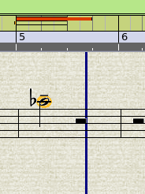
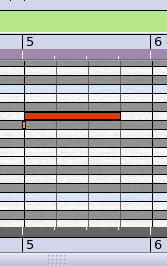
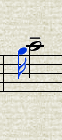

The Rosegarden Notation Challenge
Copyright © 2008 D. Michael McIntyre
This tutorial was written using a pre-release version of Rosegarden 1.7.0.
Played Grace Notes Rendered as Chords
I promised to publish a recipe for dealing with the scenario in this old bug report.
First, load the file from that report and have a look at bar 5 in a notation view.

Ugly. What's going on here? The raw note ruler at the top only gives a tiny hint, and we probably need to have a look in the matrix for this one.

There's the culprit. The little "grace" note coming ahead of the beat, and straddling the barline. Rosegarden is not sure what to do with this at all (although, helpfully, at least we circle the note now, which is an improvement over when this report was filed three years ago.)
The best solution I can think of is to delete the little G#4 from the matrix, then go back to a notation view, go into grace insert mode, and stick the note back in ahead of the longer note.

We'll just gloss over the fact that the # didn't show up, and all the weird rest problems that remain. Nothing to see here. Move along. These aren't the droids you're looking for.